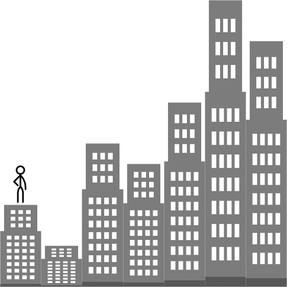

| Category | Difficulty | Likes | Dislikes |
|---|---|---|---|
| Algorithms | Medium | 6179 | 149 |
amazon | phonepe | google | oyo | apple | microsoft | tiktok | de-shaw | dream11 | uber | twilio | medianet
You are given an integer array heights representing the heights of buildings, some bricks, and some ladders.
You start your journey from building 0 and move to the next building by possibly using bricks or ladders.
While moving from building i to building i+1 (0-indexed),
(h[i+1] - h[i]) bricks.Return the furthest building index (0-indexed) you can reach if you use the given ladders and bricks optimally.
Example 1:

Input: heights = [4,2,7,6,9,14,12], bricks = 5, ladders = 1
Output: 4
Explanation: Starting at building 0, you can follow these steps:
- Go to building 1 without using ladders nor bricks since 4 >= 2.
- Go to building 2 using 5 bricks. You must use either bricks or ladders because 2 < 7.
- Go to building 3 without using ladders nor bricks since 7 >= 6.
- Go to building 4 using your only ladder. You must use either bricks or ladders because 6 < 9.
It is impossible to go beyond building 4 because you do not have any more bricks or ladders.Example 2:
Input: heights = [4,12,2,7,3,18,20,3,19], bricks = 10, ladders = 2
Output: 7Example 3:
Input: heights = [14,3,19,3], bricks = 17, ladders = 0
Output: 3
Constraints:
1 <= heights.length <= 1051 <= heights[i] <= 1060 <= bricks <= 1090 <= ladders <= heights.length